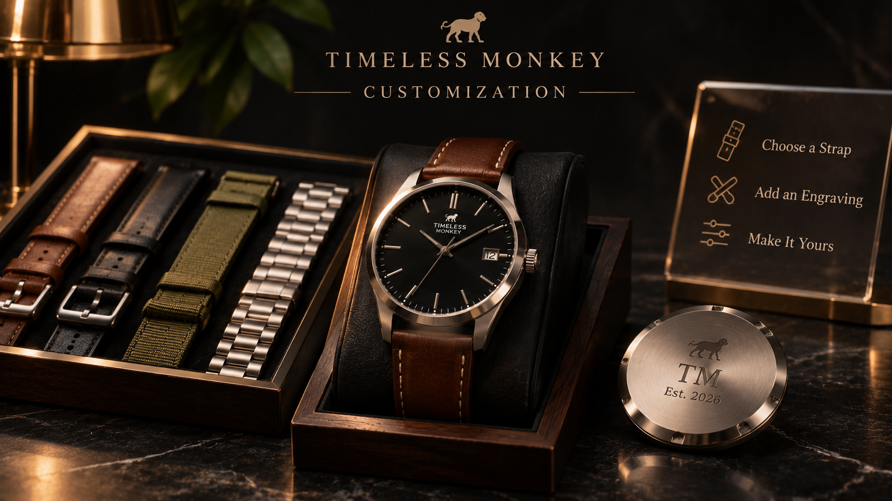

Make It Yours
Every watch is a blank canvas waiting for your personal touch. Start with a style you love, then make it uniquely yours with a few simple customizations.
For a personal touch, we also offer short case-back engravings. Initials, a date, or a few meaningful words are usually enough. We will help you check the spelling and placement before the engraving is finalized.

Customization Made Easy
Take three simple steps to make your watch uniquely yours:
- Pick a watch from the collection.
- Choose your next strap style.
- Add a short engraving if you want one.